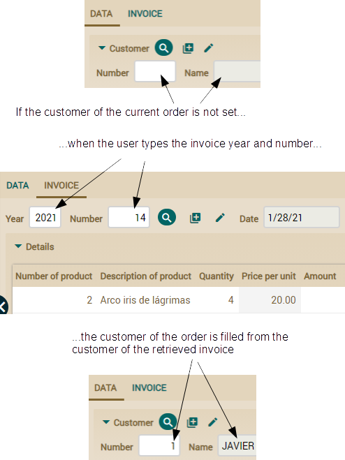
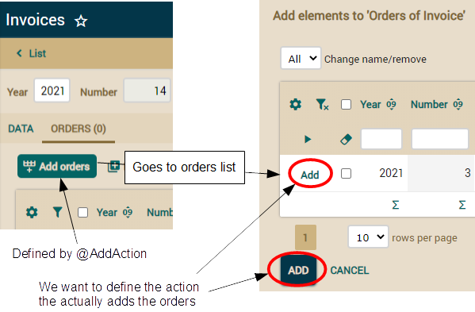

For defining our own search
action for the invoice reference we will use the
@SearchAction
annotation. Here you have the needed modification in
Order
class:
public class Order extends CommercialDocument {
@ManyToOne
@ReferenceView("NoCustomerNoOrders")
@OnChange(ShowHideCreateInvoiceAction.class)
@SearchAction("Order.searchInvoice") // To define our own action to search invoices
Invoice invoice;
...
}
In this simple way we define the action to execute when the user
clicks on the flashlight button to search an invoice. The argument used
for
@SearchAction,
Order.searchInvoice, is the qualified
name of the action, that is the action
searchInvoice of the
controller
Order as defined in
controllers.xml file. Now
we have to edit
controllers.xml to add the definition of our new
action:
<controller name="Order">
...
<action name="searchInvoice"
class="com.yourcompany.invoicing.actions.SearchInvoiceFromOrderAction"
hidden="true" icon="magnify"/>
<!--
hidden="true" : Because we don't want the action to be shown in module button bar
icon="magnify" : The same icon as for the standard search action
-->
</controller>
Our action extends from
ReferenceSearchAction as shown in
the next code:
package com.yourcompany.invoicing.actions; // In 'actions' package
import org.openxava.actions.*; // To use ReferenceSearchAction
public class SearchInvoiceFromOrderAction
extends ReferenceSearchAction { // Standard logic for searching a reference
public void execute() throws Exception {
int customerNumber =
getView().getValueInt("customer.number"); // Reads from the view the
// customer number of the current order
super.execute(); // It executes the standard logic that shows a dialog
if (customerNumber > 0) { // If there is customer we use it to filter
getTab().setBaseCondition("${customer.number} = " + customerNumber);
}
}
}
Note how we use
getTab().setBaseCondition() to establish a
condition for the list to choose the reference. That is, from a
ReferenceSearchAction you can use
getTab() to manipulate the
way the search list behaves.
If there is no customer we don't add any condition so all the invoices
will be shown, this is the case when the user chooses the invoice before
choosing the customer.
Searching the
reference typing in fields
The list for choosing a reference already works fine. However, we want to
give the user the possibility to choose the invoice without the list, by
just typing the year and number. Very useful if the user already know
which invoice he wants. OpenXava provides this functionality by default.
If the
@Id fields are displayed in the reference they are used for
searching, otherwise OpenXava uses the first displayed field to search.
This is not convenient in our case, because the first displayed field is
the year, and searching an invoice only by year is not very precise. The
following image shows the default behavior and a more convenient
alternative:

Fortunately it's easy to indicate which fields we want to use to search
from a user perspective. This is done by means of
@SearchKey
annotation. Just edit the
CommercialDocument class (remember, the
parent of
Order and
Invoice) and add that annotation to
the
year and
number properties:
abstract public class CommercialDocument extends Deletable {
@SearchKey // Add this annotation here
@Column(length=4)
@DefaultValueCalculator(CurrentYearCalculator.class)
int year;
@SearchKey // Add this annotation here
@Column(length=6)
@ReadOnly
int number;
...
}
In this way when the user searches an order or invoice from a
reference he must type the year and the number, and the corresponding
entity will be retrieved from database and will populate the user
interface.
Now it's easy for the user to choose an invoice for the order without
using the searching list, just by typing year and number.
Refining
action for searching reference typing key
Now that retrieving an invoice by the year and number is usable, we want
to refine it in order to help our user to do his work more efficiently.
For example, it would be useful that if the user has not chosen a customer
for the order yet and he chooses an invoice, the customer of that invoice
will be assigned to the current order automatically. The following image
visualizes the wanted behavior:

On the other hand, if the user already has selected the customer for the
order, if he is not the same in the invoice, it will be rejected and a
message error displayed, just in this way:
For defining this special
behavior we have to add an
@OnChangeSearch annotation in the the
invoice
reference of
Order.
@OnChangeSearch allows you to define
your own action to do the search of the reference when its key changes in
the user interface. You can see the modified reference here:
public class Order extends CommercialDocument {
@ManyToOne
@ReferenceView("NoCustomerNoOrders")
@OnChange(ShowHideCreateInvoiceAction.class)
@OnChangeSearch(OnChangeSearchInvoiceAction.class) // Add this annotation
@SearchAction("Order.searchInvoice")
Invoice invoice;
...
}
From now on when the user types a new year and number for the
invoice, the logic of
OnChangeSearchInvoiceAction will be
executed. In this action you have to read the invoice data from database
and update the user interface. This is the action code:
package com.yourcompany.invoicing.actions; // In 'actions' package
import java.util.*;
import org.openxava.actions.*; // To use OnChangeSearchAction
import org.openxava.model.*;
import org.openxava.view.*;
import com.yourcompany.invoicing.model.*;
public class OnChangeSearchInvoiceAction
extends OnChangeSearchAction { // Standard logic for searching a reference when
// the key values change in the user interface (1)
public void execute() throws Exception {
super.execute(); // It executes the standard logic (2)
Map keyValues = getView()// getView() here is the reference view, not the main one (3)
.getKeyValuesWithValue();
if (keyValues.isEmpty()) return; // If key is empty no additional logic is executed
Invoice invoice = (Invoice) // We search the Invoice entity from the typed key (4)
MapFacade.findEntity(getView().getModelName(), keyValues);
View customerView = getView().getRoot().getSubview("customer"); // (5)
int customerNumber = customerView.getValueInt("number");
if (customerNumber == 0) { // If there is no customer we fill it (6)
customerView.setValue("number", invoice.getCustomer().getNumber());
customerView.refresh();
}
else { // If there is already customer we verify that he matches the invoice customer (7)
if (customerNumber != invoice.getCustomer().getNumber()) {
addError("invoice_customer_not_match",
invoice.getCustomer().getNumber(), invoice, customerNumber);
getView().clear();
}
}
}
}
Given the action extends from
OnChangeSearchAction (1) and
we use
super.execute() (2) it behaves just in the standard way,
that is, when the user types a year and number the invoice data is
retrieved and fills the user interface. Afterwards, we use
getView()
(3) to obtain the key of the displayed invoice to find the corresponding
entity using
MapFacade (4). From inside an
OnChangeSearchAction
getView() returns the subview of the reference, and not the global
view. Therefore, in this case
getView() is the view of the invoice
reference. This allows you to create more reusable
@OnChangeSearch
actions. Thus you have to write
getView().getRoot().getSubview("customer")
(5) to access to the customer view.
To implement the behavior visualized in the previous image, the action
asks if there is no customer (
customberNumber == 0) (6). If this is
the case it fills the customer from the customer of the invoice. Otherwise
it implements the logic from previous image verifying that the customer of
the current order matches the customer of the retrieved invoice.
The last remaining detail is the message text. Add the next entry to the
Invoicing-messages_en.properties
file of
i18n folder.
invoice_customer_not_match=Customer Nº {0} of invoice {1} does not match with customer Nº {2} of the current order
One interesting thing about
@OnChangeSearch is that it is
also executed when the invoice is chosen from a list, because in this case
the year and number of the invoice also changes. Hence, this is a
centralized place to refine the logic for retrieving the reference and
populating the view.
Refining collection
behavior
We can refine collections in the same way we have refined references. This
is very useful, because it allows us to improve the current behavior of
the
Invoice module. The user can only add an order to an invoice
if the invoice and the orders belongs to the same customer. Moreover, the
order must be delivered and must not have an invoice yet.
Refining
the list for adding elements to a collection
Currently when the user tries to add orders to an invoice all the orders
are available. We are going to improve this for showing only the orders
from the customer of the invoice, delivered and with not invoice yet, just
as shown:

We will use the
@AddAction annotation for defining our own action
to show the list for adding orders. The following code shows the needed
modification in
Invoice class.
public class Invoice extends CommercialDocument {
@OneToMany(mappedBy="invoice")
@CollectionView("NoCustomerNoInvoice")
@AddAction("Invoice.addOrders") // To define our own action to add orders
Collection<Order> orders;
...
}
In this simple way we define the action to execute when the user
clicks on the button to add orders. The argument used for
@AddAction,
Invoice.addOrders, is the qualified name of the action, that is the
action
addOrders of the controller
Invoice as defined in
controllers.xml file.
Now we have to edit
controllers.xml to add the
Invoice
controller (it does not exist yet) definition with our new action:
<controller name="Invoice">
<extends controller="Invoicing"/>
<action name="addOrders"
class="com.yourcompany.invoicing.actions.GoAddOrdersToInvoiceAction"
hidden="true" icon="table-row-plus-after"/>
<!--
hidden="true" : Because we don't want the action to be shown in module button bar
icon="table-row-plus-after" : The same icon as for the standard action
-->
</controller>
This is the action code:
package com.yourcompany.invoicing.actions; // In 'actions' package
import org.openxava.actions.*; // To use GoAddElementsToCollectionAction
public class GoAddOrdersToInvoiceAction
extends GoAddElementsToCollectionAction { // Standard logic to go to
// adding collection elements list
public void execute() throws Exception {
super.execute(); // It executes the standard logic, that shows a dialog
int customerNumber =
getPreviousView() // getPreviousView() is the main view (we are in a dialog)
.getValueInt("customer.number"); // Reads the customer number
// of the current invoice from the view
getTab().setBaseCondition( // The condition of the orders list to add
"${customer.number} = " + customerNumber +
" and ${delivered} = true and ${invoice} is null"
);
}
}
Note how we use
getTab().setBaseCondition() to establish a
condition for the list to choose the entities to add. That is, from a
GoAddElementsToCollectionAction you can use
getTab() to
manipulate the way the list behaves.
Refining
the action to add elements to a collection
A useful improvement for the orders collection would be that when the user
adds orders to the current invoice, the detail lines of those orders will
be copied automatically to the invoice.
We cannot use the
@AddAction for this, because it is the action to
show the list to add elements to the collection. But this is not the
action that adds the elements.
Let's learn how to define the action that actually adds the elements:

Unfortunately, there is not an annotation to directly define this 'Add'
action. However, that is not a very difficult task, we only have to refine
the
@AddAction instructing it to show our own controller, and in
this controller we can put the actions we want. Given we already have
defined our
@AddAction in the previous section we only have to add
a new method to the already existing
GoAddOrdersToInvoiceAction
class. Add the next
getNextController() method to your action:
public class GoAddOrdersToInvoiceAction ... {
...
public String getNextController() { // We add this method
return "AddOrdersToInvoice"; // The controller with the available actions
} // in the list of orders to add
}
By default the actions in the list of entities to add (the ADD and
CANCEL buttons) are from the standard OpenXava controller
AddToCollection.
Overwriting
getNextController() in our action allows us to define
our own controller instead. Add the next definition in
controllers.xml
for our custom controller for adding elements:
<controller name="AddOrdersToInvoice">
<extends controller="AddToCollection" /> <!-- Extends from the standard controller -->
<!-- Overwrites the action to add -->
<action name="add"
class="com.yourcompany.invoicing.actions.AddOrdersToInvoiceAction" />
</controller>
In this way the action to add orders to the invoice is
AddOrdersToInvoiceAction.
Remember that the goal of our action is to add the orders to the invoice
in the usual way, but also to copy the detail lines from those orders to
the invoice. This is the code of the action:
package com.yourcompany.invoicing.actions; // In 'actions' package
import java.rmi.*;
import java.util.*;
import javax.ejb.*;
import org.openxava.actions.*; // To use AddElementsToCollectionAction
import org.openxava.model.*;
import org.openxava.util.*;
import org.openxava.validators.*;
import com.yourcompany.invoicing.model.*;
public class AddOrdersToInvoiceAction
extends AddElementsToCollectionAction { // Standard logic for adding
// collection elements
public void execute() throws Exception {
super.execute(); // We use the standard logic "as is"
getView().refresh(); // To display fresh data, including recalculated
} // amounts, which depend on detail lines
protected void associateEntity(Map keyValues) // The method called to associate
throws ValidationException, // each entity to the main one, in this case to
XavaException, ObjectNotFoundException,// associate each order to the invoice
FinderException, RemoteException
{
super.associateEntity(keyValues); // It executes the standard logic (1)
Order order = (Order) MapFacade.findEntity("Order", keyValues); // (2)
order.copyDetailsToInvoice(); // Delegates the main work to the entity (3)
}
}
We overwrite the
execute() method only to refresh the view
after the process. Really, we want to refine the logic for associating an
order to the invoice. The way to do this is overwriting the
associateEntity()
method. The logic here is simple, after executing the standard logic (1)
we search the corresponding
Order entity and then call the
copyDetailsToInvoice()
in that
Order. Luckily we already have a method to copy details
from an
Order to the specified
Invoice, we just call this
method.